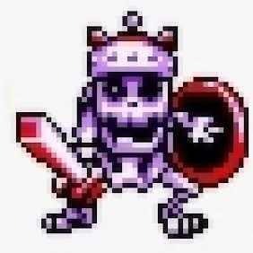
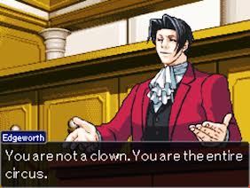
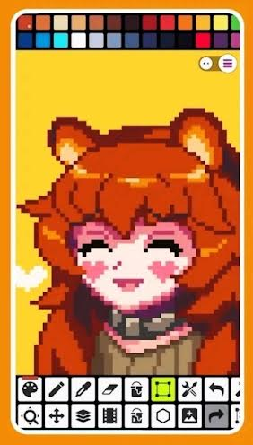

Apa itu Pixel Art
> by Blog Xoupedia
> Mei 02, 2022
> Edukasi
Dalam dunia design grafis, atau dalam bahasa awam mengenalnya dengan nama seni gambar menggambar 😆. Kita mengenal istilah yang namanya "Pixel art".
Pixel art ini sangat luas pengaplikasiannya. Baik dalam bidang seni, gaming, bisnis, jual beli, nft, dll. Karya seni pixel art ini banyak diminati.

Dalam era modern seperti sekarang, karya seni pixel art ini banyak dibuat melalui berbagai jenis tools gambar di komputer dan smartphone. Ya bisa dibilang digital art begitulah. Kamu bisa membuat pixel art dengan bantuan software seperti gimp, ms paint, photoshop, dan berbagai app khusus lain buat membuat pixel art. Di android misalnya, banyak jenis aplikasi yang bisa kamu coba.
Pengertian Pixel Art

Pixel art merupakan sebuah karya seni, umumnya seni digital yang dibuat dengan bantuan software. Dimana dalam teknik penggambarannya menampilkan elemen piksel dalam gambar secara sengaja. Sehingga grafis gambar yang dihasilkan nampak terlihat seperti penggambaran karakter game pada konsol 8-16 bit di masa lalu. Yang mana grafis gambar pixel art nampak kotak-kotak, dengan jumlah warna yang terbatas.
Tidak seperti zaman dahulu pada era keemasan game 8-16 bit, dan konsol jadul lainnya. Seperti halnya pada konsol game nes, snes, sega, gbc, gba, dll. Di era modern sekarang, dalam dunia gaming umum kita temui grafis game yang sangat canggih. 3D, penuh realitas dan sejumlah efek yang meriah. Jarang yang menggunakan grafis pixel.
Akan tetapi, dibalik hal tersebut. Ternyata banyak orang yang masih mempertahankan seni gambar piksel ini. Dan dari sinilah lahir para artist tukang gambar pixel art (pixel artists). Dari buah karya seni gambar piksel, dapat melahirkan banyak produk yang top bangets. Terutama dalam dunia gaming, industri pixel game atau game 8 bit ini masih laris di pasaran. Kamu tahu kan dengan game pixel seperti minecraft, terraria, undertale, guardian tales, dan sebagainya. Game bertema pixel art tersebut sangat sukses dipasaran, dan banyak dimainkan oleh gamer.
Cara Menggambar Pixel Art

Hal yang pertama harus kamu miliki didalam membuat gambar piksel adalah aplikasi buat menggambar pixel art itu sendiri. Sebagai contoh ada di os android. Ada banyak aplikasi gambar pixel art yang ada. Sepertihalnya ada app pixel studio, 8 bit painter, dll.
Untuk teknik penggambaran pixel art cukup simpel. Tinggal buat saja garis, lengkungan, buat coretan gambar per pixel, ngefill warna, dan seterusnya dengan pixel gambar yang besar. Maka sudah jadilah gambar pixel art. Kalau sudah pro, pasti nanti pixel art yang dihasilkan juga akan jadi bagus. Misalnya bisa menggambar gradasi dan tekstur dengan baik. Menggunakan teknik gambar isometric, dan sebagainya. Tergantung jam terbang atau pengalaman tentunya.
Cukup sekian saja, begitulah adanya pengertian dari pixel art. Dan perannya di zaman modern saat ini.